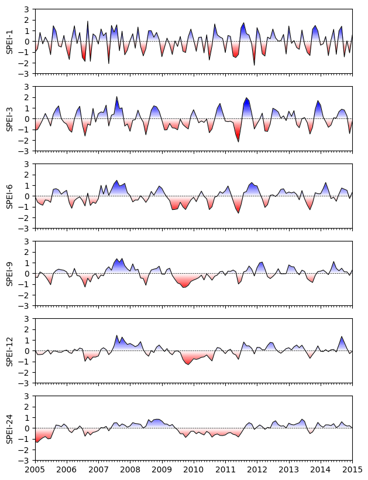
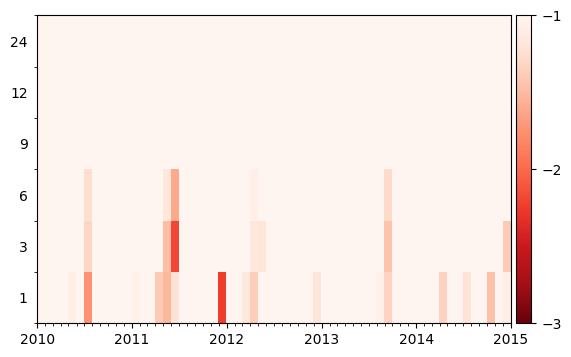
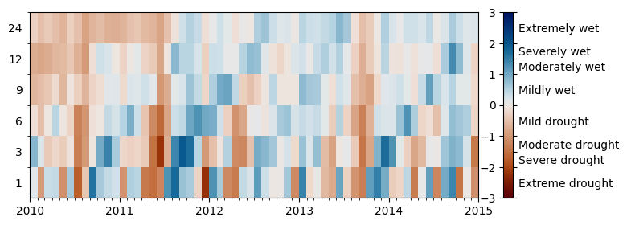

Analyzing Multi-Year Droughts¶
After van Mourik, J. and Ruijsch, D. and van der Wiel, K. and Hazeleger, W. and Wanders, N. (2025) - Regional drivers and characteristics of multi-year droughts
Load packages¶
[1]:
import matplotlib as mpl
import matplotlib.pyplot as plt
import pandas as pd
import spei as si # si for standardized index
print(si.show_versions())
python: 3.11.13
spei: 0.8.0
numpy: 2.2.6
scipy: 1.16.1
matplotlib: 3.10.3
pandas: 2.3.1
Load meteo data¶
[2]:
df = pd.read_csv("data/DEBILT.csv", index_col=0, parse_dates=True)
prec = df["Prec [m/d] 260_DEBILT"].multiply(1e3).rename("prec")
evap = df["Evap [m/d] 260_DEBILT"].multiply(1e3).rename("evap")
Calculate SPEI over different time scales¶
1 month to 24 months
[3]:
pe = (
(prec - evap).dropna().resample("ME").sum()
) # calculate monthly precipitation excess
spei1 = si.spei(pe, timescale=1).rename("1")
spei3 = si.spei(pe, timescale=3).rename("3")
spei6 = si.spei(pe, timescale=6).rename("6")
spei9 = si.spei(pe, timescale=9).rename("9")
spei12 = si.spei(pe, timescale=12).rename("12")
spei24 = si.spei(pe, timescale=24).rename("24")
Visualization¶
Plot as time series¶
[4]:
f, ax = plt.subplots(6, figsize=(7.0, 10.0), sharex=True)
si.plot.si(spei1, ax=ax[0], add_category=False)
si.plot.si(spei3, ax=ax[1], add_category=False)
si.plot.si(spei6, ax=ax[2], add_category=False)
si.plot.si(spei9, ax=ax[3], add_category=False)
si.plot.si(spei12, ax=ax[4], add_category=False)
si.plot.si(spei24, ax=ax[5], add_category=False)
ax[0].set_ylabel("SPEI-1")
ax[1].set_ylabel("SPEI-3")
ax[2].set_ylabel("SPEI-6")
ax[3].set_ylabel("SPEI-9")
ax[4].set_ylabel("SPEI-12")
ax[5].set_ylabel("SPEI-24")
ax[5].xaxis.set_major_locator(mpl.dates.YearLocator())
ax[5].xaxis.set_minor_locator(mpl.dates.MonthLocator())
ax[5].set_xlim(pd.Timestamp("2005"), pd.Timestamp("2015"))
[4]:
(np.float64(12784.0), np.float64(16436.0))

Plot as heatmap¶
Only droughts
[5]:
ax = si.plot.heatmap([spei1, spei3, spei6, spei9, spei12, spei24])
ax.xaxis.set_major_locator(mpl.dates.YearLocator())
ax.xaxis.set_minor_locator(mpl.dates.MonthLocator())
ax.get_figure().axes[-1].set_yticks(range(-3, 0))
ax.set_xlim(pd.Timestamp("2010"), pd.Timestamp("2015"))
[5]:
(np.float64(14610.0), np.float64(16436.0))

Or with wet periods
[6]:
f, ax = plt.subplots(figsize=(8.0, 3.0))
ax = si.plot.heatmap(
[spei1, spei3, spei6, spei9, spei12, spei24],
cmap="vik_r",
vmax=3,
add_category=True,
ax=ax,
)
ax.xaxis.set_major_locator(mpl.dates.YearLocator())
ax.xaxis.set_minor_locator(mpl.dates.MonthLocator())
ax.set_xlim(pd.Timestamp("2010"), pd.Timestamp("2015"))
[6]:
(np.float64(14610.0), np.float64(16436.0))
